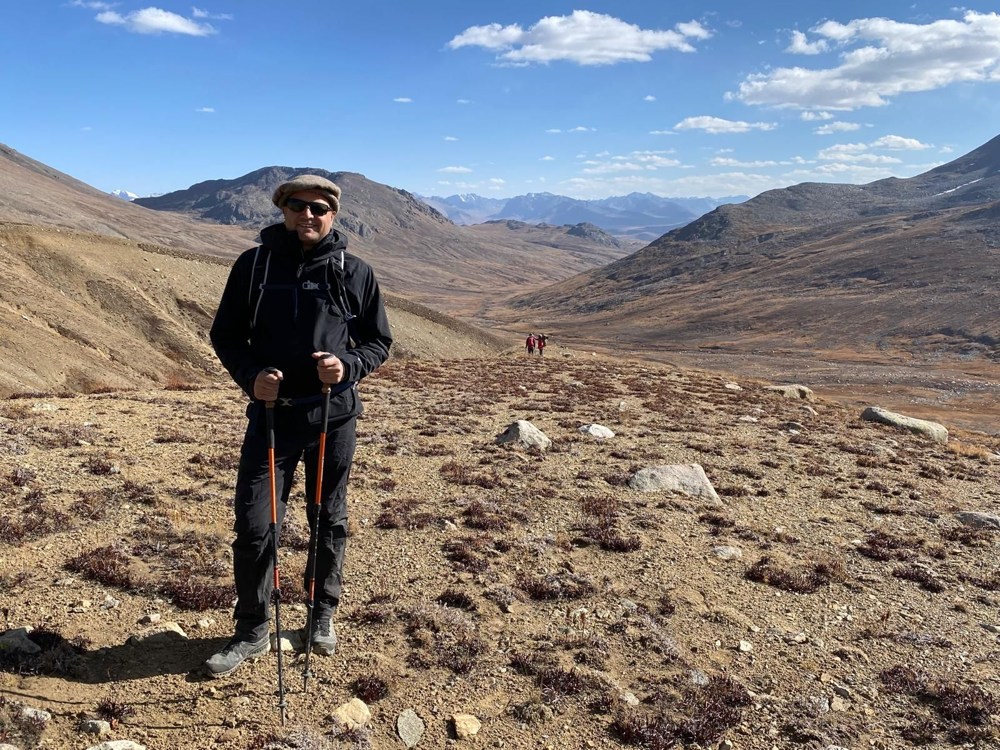
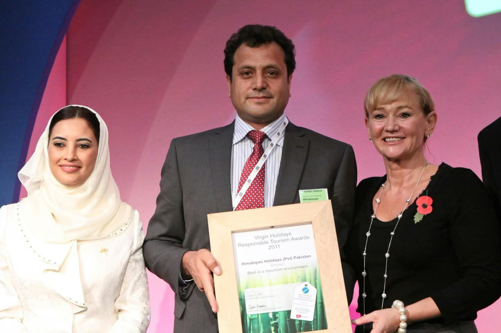
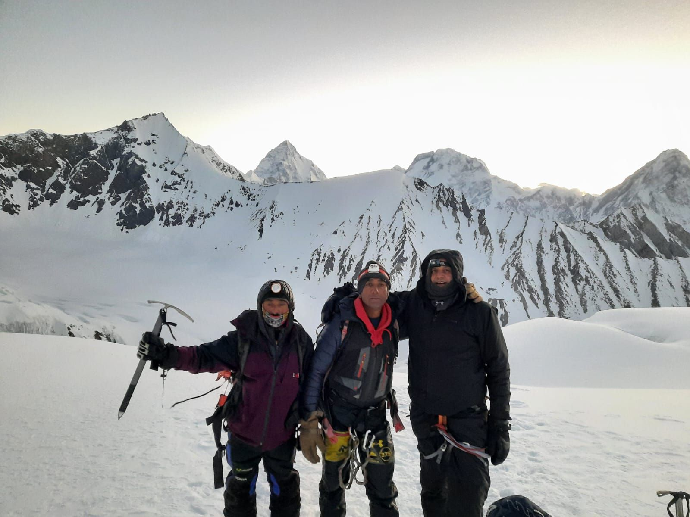
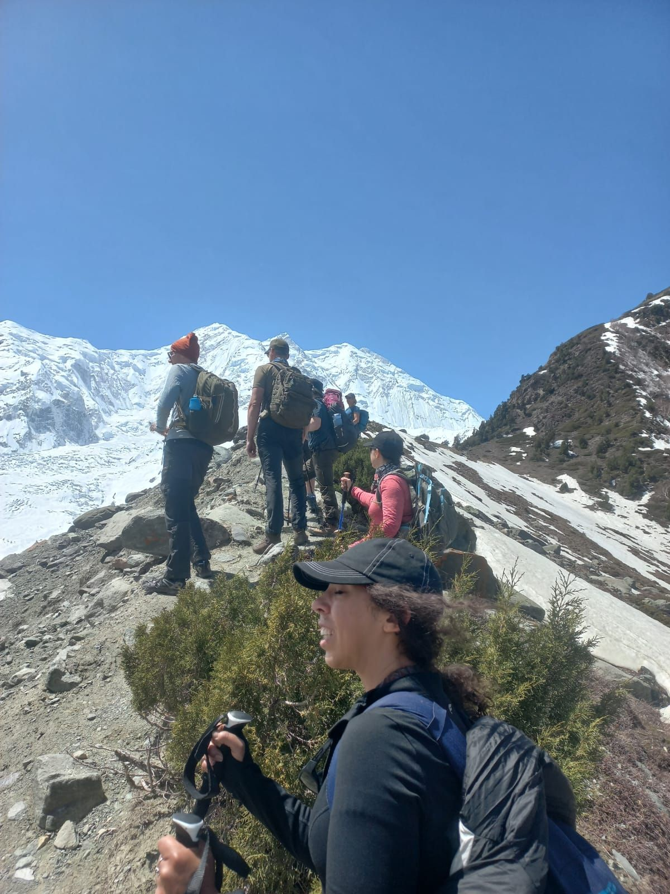
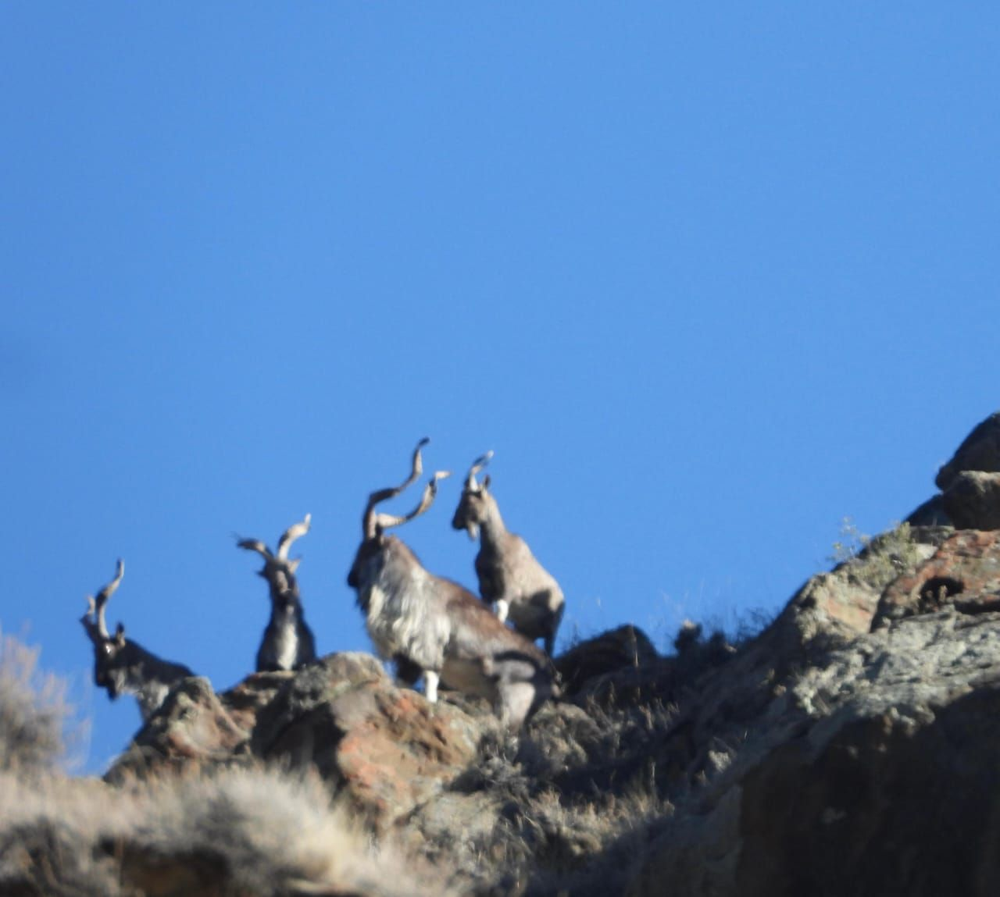
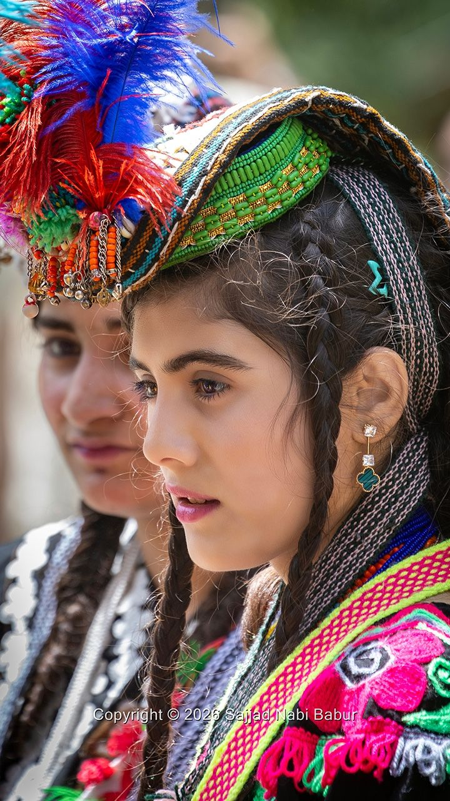
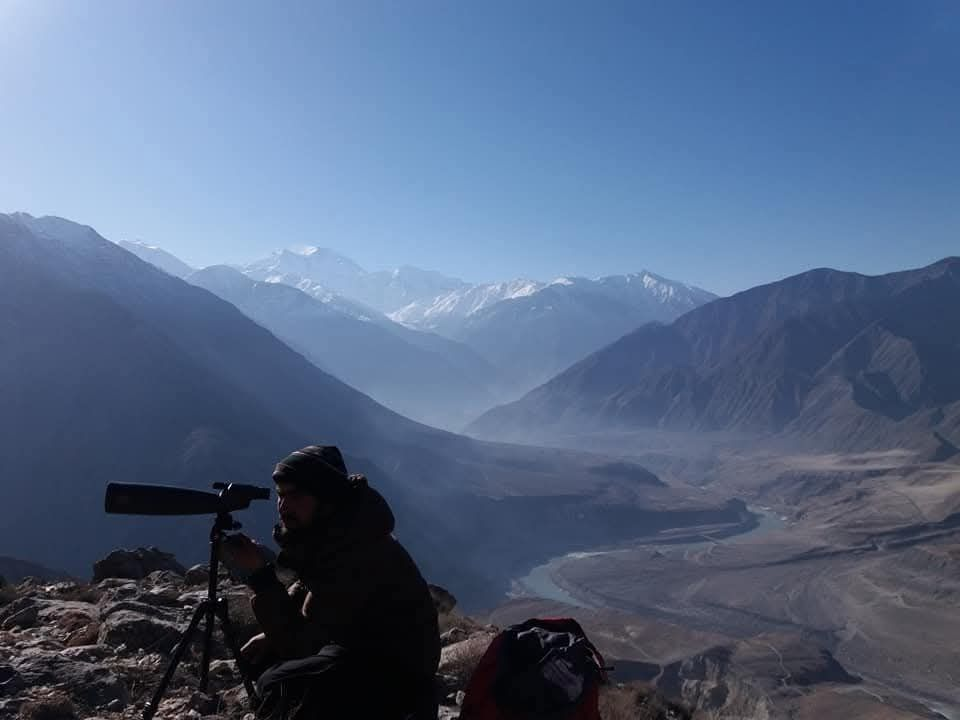
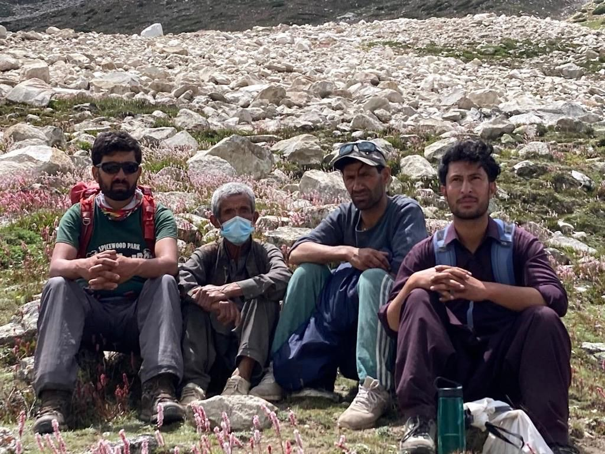

Mountaineer · Tour leader · Responsible tourism advocate
Najeeb Ahmed Khan
Founder & CEO, Himalayan Holidays (Pvt) Ltd
Chairman, Pakistan Association of Tour Operators (PATO)
World Responsible Tourism Award, WTM London 2011
For more than three decades I have led climbers, trekkers, naturalists and film crews into Pakistan's high mountains, working with the communities who call them home.
I founded the company in 1999 with five tents and one jeep. Today it is Pakistan's specialist operator for mountaineering, trekking, wildlife and cultural heritage travel, and it won the World Responsible Tourism Award in 2011.
Expeditions to K2, Nanga Parbat and all 8000m / 7000m peaks
Trekking, wildlife safaris, heritage tours and film support
Local guides, local transport and local food on every trip
PATO is the Voice of Tourism in Pakistan. As its Chairman, I represent the country's tour operators and work to grow tourism that is safe, professional and responsible.
Representing Pakistan's tour operators at home and abroad
Promoting Pakistan at WTM, ITB and international forums
Championing responsible tourism standards across the industry
Thirty years. Three hundred expeditions. One mountain country.
With over 30 years of experience and more than 300 expeditions in the Himalaya, Karakoram and Hindukush, I lead Himalayan Holidays (Pvt) Ltd, Pakistan's specialist company for mountaineering, trekking, bird watching, wildlife mountain safaris and cultural heritage tours.
I founded the company in 1999 with five tents and one jeep. Our work is built on originality, quality and safety. We hire and train local guides, use local transport and food, and make sure tourism benefits local families. As Chairman of PATO, I also represent Pakistan's tour operators at home and abroad.


What we do
Five ways into the mountains.
From 8000m summits to ancient civilizations, every journey is planned and led by people who know the terrain.

01
Mountaineering Expeditions
K2, Nanga Parbat and all the 8000m and 7000m peaks, with full logistics, permits and experienced high-altitude staff.

02
Trekking & Mountain Safaris
Gilgit-Baltistan, Kaghan, Astore, Chitral and the Wakhan Corridor, from gentle valley walks to remote high passes.

03
Wildlife & Bird Watching
Snow Leopard Watch, Astore Markhor, the Wildlife Protection and Insurance Tour in Bunji, Deosai, and the Cholistan Desert Safari.

04
Cultural Heritage Tours
The Indus Valley, Harappan and Gandhara civilizations, the Kalash Valleys and other heritage sites across Pakistan.

05
Filming & Production Support
Mountain filming, wildlife documentaries, TV commercials and feature films, with location scouting and on-ground logistics.
Destinations
From the Wakhan to the desert.
The regions we know best, from glaciers and high plateaus to river civilizations and sand dunes.
01
Gilgit-Baltistan
Karakoram · K2 & the 8000m giants
02
Astore
Markhor watching · Nanga Parbat trails
03
Deosai
High plateau · Wildlife safaris
04
Chitral
Hindukush · Treks & mountain safaris
05
Kalash Valleys
Living culture · Heritage tours
06
Wakhan Corridor
Remote high passes · Expedition trekking
07
Kaghan
Valley treks · Alpine lakes
08
Cholistan
Desert safari · Forts & dunes
09
Indus & Gandhara
Harappan, Indus Valley & Gandhara sites
Responsible Tourism
Every traveller leaves something behind. We make it trees.
Promoting environmentally responsible travel across Pakistan.
One Tourist, Three Trees
Every traveller we host leads to three trees planted in the regions they visit.
Adopt a Tree in Schools
Schoolchildren adopt and care for trees, growing environmental awareness in the next generation.
Snow Leopard Conservation
We compensate shepherds for livestock lost to snow leopards, so communities and wildlife can live side by side.

Local people, local benefit
We hire and train local guides, travel with local transport and eat local food, so the income from every trip stays with mountain families.
Global Stage
Pakistan's mountains, on the world's biggest stages.
Panel speaker and exhibitor at leading travel and tourism events, bringing Pakistan's mountains to international buyers and media.